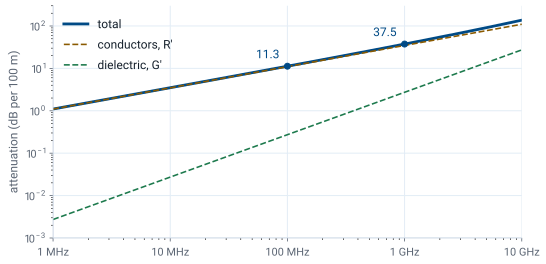

L5 - Characteristic Impedance and Wave Propagation#
Characteristic Impedance and Wave Propagation
Today we read the impedance, speed, wavelength, and loss of a line out of the wave solution.
Lesson 5 · Module 1: Foundations · Maj Ellis · Dr. Neil Rogers
Learning Objectives
- I can explain the physical meaning of and calculate the following quantities: propagation constant, phase constant, attenuation constant, characteristic impedance, VSWR, reflection coefficient, and transmission coefficient.
Lesson 4 solved the wave equation and found that the voltage on a line is the sum of two traveling waves, but it left two things open: how the current in each wave relates to its voltage, and what the propagation constant means in numbers. Today we close both. The current-to-voltage ratio of a single wave is the line’s characteristic impedance \(Z_0\). The imaginary part of the propagation constant gives the wave’s phase velocity and wavelength, and its real part gives the attenuation, which we compute for RG-58 to see how much a real cable loses. This lesson covers the first four quantities in objective 3.2; Lesson 6 covers the rest.
Where We Were
Lesson 4: the general solution
Lesson 4 turned the telegrapher’s equations into phasor form, uncoupled them into a wave equation, and solved it. The voltage is an incident wave with amplitude \(V_0^+\) traveling toward the load and a reflected wave with amplitude \(V_0^-\) traveling toward the source. The current has the same form with its own constants, \(I_0^+\) and \(I_0^-\). Those four constants are not independent, because the voltage and current must still satisfy the first-order phasor equation shown here. That equation is where we start.
The Current in Each Wave
We differentiate the voltage solution with respect to \(z\). Each exponential \(e^{\mp\gamma z}\) brings down a factor of \(\mp\gamma\), and the minus sign on the left side flips both signs. The first-order phasor equation says this same quantity equals \(\left(R' + j\omega L'\right)\widetilde{I}(z)\), so we set the two equal and divide by the series impedance. The result gives the current everywhere on the line in terms of the voltage constants alone. The two waves appear with opposite signs: the reflected wave’s current flows in the \(-z\) direction, the direction it travels.
Characteristic Impedance
The factor \(\gamma/(R' + j\omega L')\) has units of inverse ohms, so we define its reciprocal as the characteristic impedance \(Z_0\). Writing \(\gamma\) as its square root, the series impedance appears once in the numerator and once under the root in the denominator, and dividing leaves the square root of the series impedance over the shunt admittance. Replacing the factor with \(1/Z_0\) in the current solution and comparing with \(\widetilde{I}(z) = I_0^+ e^{-\gamma z} + I_0^- e^{+\gamma z}\) term by term gives the two current constants. In the incident wave, voltage and current are in the ratio \(Z_0\); in the reflected wave, the ratio is \(-Z_0\).
What Z0 Means
Voltage over current in one traveling wave.
Set by geometry and materials, not length.
Not a resistor: a lossless \(50\ \Omega\) line dissipates nothing.
An infinitely long line looks like \(Z_0\).
The characteristic impedance is easy to misread as the impedance of the line, so it is worth stating what it is. It is the ratio of voltage to current in a single traveling wave. It depends only on \(R'\), \(L'\), \(G'\), and \(C'\), which depend only on the cross section and the materials, so every length of RG-58 has the same \(Z_0\). It does not dissipate power the way a resistor does; on a lossless line, the power carried by the wave simply moves down the line. If the line were infinitely long, no wave would ever come back, so a source connected to it would see only the incident wave and measure an impedance of exactly \(Z_0\). Once a reflected wave is present, the ratio of total voltage to total current changes along the line, and Lesson 7 computes it.
Phase Velocity
Follow a point of constant phase on the incident wave:
Lesson 4 showed that a crest of the incident wave moves in the \(+z\) direction. To find how fast, we set its phase, \(\omega t - \beta z\), equal to a constant, which describes the crest’s position as a function of time. Differentiating both sides with respect to \(t\) gives \(\omega - \beta\ dz/dt = 0\), and solving for \(dz/dt\) gives the speed of the crest. That speed is the phase velocity \(v_p\), the speed at which any point of constant phase moves along the line.
Wavelength
The phase repeats every \(2\pi\):
At a fixed instant, the cosine \(\cos(\omega t - \beta z)\) repeats each time \(\beta z\) advances by \(2\pi\). The distance over which that happens is the wavelength, so \(\beta\lambda = 2\pi\). This is the physical meaning of the phase constant: \(\beta\) is the phase change per meter, and there are \(2\pi\) radians in each wavelength. Substituting \(\beta = \omega/v_p\) and \(\omega = 2\pi f\) recovers \(\lambda = v_p/f\), the relation Lesson 3 used to decide when a line is electrically long.
The Lossless Line
With \(R' = 0\) and \(G' = 0\):
RG-58: \(v_p = 2.0 \times 10^8\) m/s, \(Z_0 = 51.7\ \Omega\).
Lesson 4 found \(\alpha = 0\) and \(\beta = \omega\sqrt{L'C'}\) for a lossless line. Dividing \(\omega\) by \(\beta\) cancels the frequency, so the phase velocity on a lossless line is the same at every frequency. In the characteristic impedance the factors of \(j\omega\) cancel too, so \(Z_0\) is a real number, independent of frequency. For RG-58, with \(L' = 259\) nH/m and \(C' = 96.8\) pF/m,
These are the velocity Lesson 3 quoted and the impedance Lesson 6 derives from the cable’s dimensions.
The Low-Loss Line
For \(R' \ll \omega L'\) and \(G' \ll \omega C'\):
Real cables have small losses, and we want \(\alpha\) without carrying the full square root. We factor \(j\omega L'\) out of the series impedance and \(j\omega C'\) out of the shunt admittance, which pulls out the lossless \(\gamma\) and leaves two square roots of the form \(\sqrt{1 + x}\), where \(x\) is small. For small \(x\), \(\sqrt{1 + x} \approx 1 + x/2\), the first two terms of its Taylor series. Multiplying out the two factors produces a term with the product of two small quantities, which we drop. Multiplying \(j\omega\sqrt{L'C'}\) through the remaining terms, the \(j\omega\) cancels in each correction, and they come out real.
Attenuation on a Low-Loss Line
Amplitude falls as \(e^{-\alpha z}\), so over a length \(\ell\):
The real part of \(\gamma\) is the attenuation constant. Recognizing \(\sqrt{L'/C'}\) as the lossless \(Z_0\), the conductor term is \(R'/2Z_0\) and the dielectric term is \(G' Z_0/2\). The imaginary part is unchanged from the lossless line, so to first order the losses change how fast the wave decays but not its speed or wavelength. The voltage amplitude falls by \(e^{-\alpha\ell}\) over a length \(\ell\). Expressing the ratio in decibels, \(20\log_{10} e^{\alpha\ell} = 20\alpha\ell\log_{10} e\), and \(20\log_{10} e = 8.686\), so one neper is \(8.686\) dB.
Worked Example: RG-58 at 100 MHz
Quantity |
Value |
|---|---|
\(R'\), from the equation sheet |
\(1.31\ \Omega\)/m |
\(G'\) |
\(1.22 \times 10^{-5}\) S/m |
\(\alpha = \frac{R'}{2Z_0} + \frac{G' Z_0}{2}\) |
\(0.0130\) Np/m |
Loss |
\(0.113\) dB/m, or \(11.3\) dB per 100 m |
Worked example — how much RG-58 loses
At 100 MHz the copper conductors of RG-58 have \(R' = 1.31\ \Omega\)/m, from the coaxial-line formula on the equation sheet, which accounts for the current crowding toward the conductor surfaces. The polyethylene dielectric has \(G' = 1.22 \times 10^{-5}\) S/m. First we check the low-loss conditions: \(R'/\omega L' = 1.31/163 = 0.008\) and \(G'/\omega C' = 0.0002\), both far below one. The two contributions to the attenuation are
so \(\alpha = 0.0130\) Np/m, and the loss is
or \(11.3\) dB per 100 m. The conductors cause almost all of it. Datasheets for RG-58 list more, about 16 dB per 100 m at this frequency, because the braided shield and stranded center conductor of real cable have more resistance than the smooth, solid conductors the formula assumes.
Loss Grows With Frequency

The figure plots the two terms of \(\alpha\) for RG-58 from 1 MHz to 10 GHz. The conductor term rises as the square root of frequency, because \(R'\) does: at higher frequency the current crowds into a thinner layer at the surface of each conductor, and less copper carries it. The dielectric term rises in direct proportion to frequency, because \(G' = \omega C' \tan\delta\), where \(\tan\delta = 2 \times 10^{-4}\) is the loss tangent of polyethylene. For this cable, the conductors dominate across the whole range. The total goes from \(11.3\) dB per 100 m at 100 MHz to \(37.5\) dB per 100 m at 1 GHz.
When Loss Matters
2 m lab cable, 100 MHz: \(0.23\) dB. Treat it as lossless.
30 m run to a rooftop antenna, 1 GHz: \(11\) dB, over 90% of the power.
The lossless model is a good approximation whenever \(\alpha\ell\) is small. A 2 m cable on the bench at 100 MHz loses \(0.113 \times 2 = 0.23\) dB, about 5% of the power, which is why the labs in this module treat their cables as lossless. A 30 m run from a radio to a rooftop antenna at 1 GHz is different: even the ideal model gives \(0.375 \times 30 = 11\) dB, so less than a tenth of the transmitter’s power reaches the antenna. That is why long runs at high frequency use larger, lower-loss cable, and why a link budget always includes the cable.
Summary
Symbol / idea |
What it is |
Number to remember |
|---|---|---|
\(Z_0\) |
Voltage over current in one traveling wave |
\(\sqrt{\frac{R' + j\omega L'}{G' + j\omega C'}}\); RG-58: \(51.7\ \Omega\) |
Current constants |
Incident and reflected wave currents |
\(I_0^+ = \frac{V_0^+}{Z_0}\), \(I_0^- = -\frac{V_0^-}{Z_0}\) |
\(v_p\) |
Speed of a point of constant phase |
\(\frac{\omega}{\beta}\); lossless: \(\frac{1}{\sqrt{L'C'}}\) |
\(\lambda\) |
Distance for \(2\pi\) of phase |
\(\frac{2\pi}{\beta} = \frac{v_p}{f}\) |
Low-loss \(\alpha\) |
Conductor plus dielectric loss |
\(\frac{R'}{2Z_0} + \frac{G' Z_0}{2}\) |
Nepers to decibels |
Amplitude ratio \(e^{\alpha\ell}\) in dB |
\(1\ \text{Np} = 8.686\ \text{dB}\) |
RG-58 loss |
Ideal-conductor model |
\(11.3\) dB/100 m at 100 MHz, \(37.5\) at 1 GHz |
Practice
Where This Is Going
Lesson 6: terminate the line in a load. The load sets \(V_0^-\) through \(\Gamma\).
Lesson 7: the impedance looking into a line of length \(\ell\).
We now have a complete description of waves on an unterminated line: the current in each wave, its speed, its wavelength, and its loss. Every one of those depends on the line alone. Lesson 6 adds the load. At the load, the ratio of total voltage to total current must equal \(Z_L\), and unless \(Z_L = Z_0\), a single incident wave cannot satisfy that condition. A reflected wave appears, and its size relative to the incident wave is the reflection coefficient.
Before Lesson 6, read sections 3.10 and 3.12 through 3.14 of Ellingson, Electromagnetics, Vol. 1.